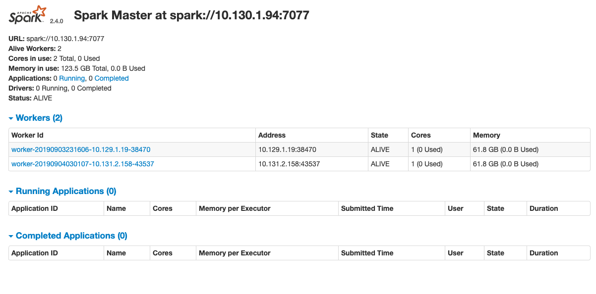
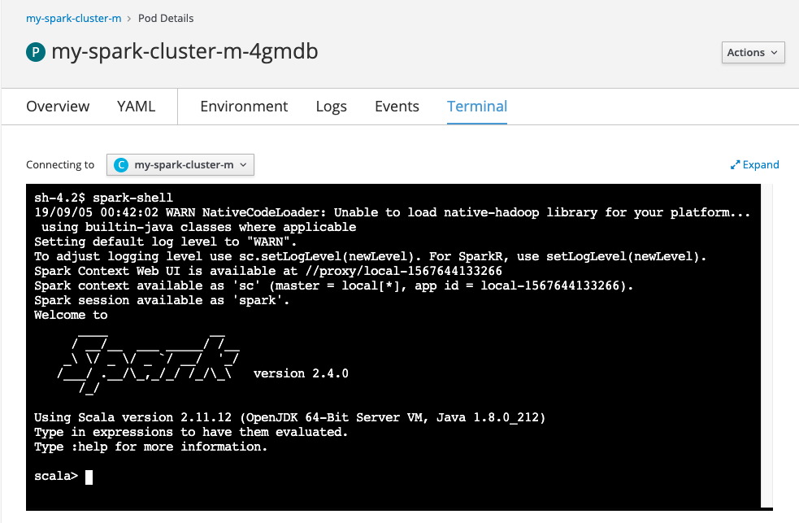

Kubernetes Operators
Operators
Operators make it easy to manage complex stateful applications on top of Kubernetes. They are custom resource definition in kubernetes. See the framework here.
Operator SDK is a framework to expose higher level APIs to write operational logic.
Here is a workflow for a new Go-based Operator using the Operator SDK:
-
Create a new Operator project using the SDK CLI.
operator-sdk new podset-operator --type=go --skip-git-init -
Create a new Custom Resource Definition API Type using the SDK CLI.
operator-sdk add api --api-version=app.example.com/v1alpha1 --kind=PodSet -
Add your Custom Resource Definition (CRD) to your live Kubernetes cluster.
- Define your Custom Resource Spec and Status.
- Create a new Controller for your Custom Resource Definition API.
- Write the reconciling logic for your Controller.
- Run the Operator locally to test your code against your live Kubernetes cluster.
- Add your Custom Resource (CR) to your live Kubernetes cluster and watch your Operator in action!
- After you are satisifed with your work, use the SDK CLI to build and generate the Operator Deployment manifests.
- Optionally add additional APIs and Controllers using the SDK CLI.
A namespace-scoped operator (the default) watches and manages resources in a single namespace, whereas a cluster-scoped operator watches and manages resources cluster-wide.
Note
TBC
Spark on openshift using operator
The following spark operator from : git clone https://github.com/radanalyticsio/spark-operator.git supports both config map or custom resource definition to deploy spark cluster on kubernetes. It works well in environments where a user has a limited role-based access to Kubernetes, such as OpenShift.
See also this note on user identity.
You need a custom spark docker image to set userid and pod security policies.
Spark operator
To deploy the spark operator, use one of the yaml file (with CRD or with configMap)
kubectl apply -f manifest/operator.yaml
or
kubectl apply -f manifest/operator-cm.yaml
Spark cluster
Once the operator is deployed, configure your spark cluster using one of the yaml examples
cd examples
kubectl apply -f cluster.yaml
or
kubectl apply -f cluster-cm.yaml
Once you don't need the cluster anymore, you can delete it by deleting the custom resource by:
kubectl delete sparkcluster my-spark-cluster
Exposing the spark UI
Create a route for the Spark UI:
- go to the service to get the exposed port for the my-spark-cluster-ui service.
- In network> routes add the roule with the following yaml:
apiVersion: route.openshift.io/v1
kind: Route
metadata:
name: expose-spark-ui
namespace: greencompute
spec:
path: /
to:
kind: Service
name: my-spark-cluster-ui
port:
targetPort: 8080
Then going to the exposed URL will bring the basic spark user interface, helpful to get visibility on the running and completed application, and the workers state.

Test with spark terminal and scala
Go to one of the spark worker pod, in the Workloads menu, then go to the Terminal and enter:
spark-shell
you should now be in scala interpretor. Spark’s shell provides a simple way to learn the API, as well as a powerful tool to analyze data interactively.

The simple exercise will be to count the number of word occurence in a file. First connect to one of the spark pod using kubectl or oc.
oc get pods
NAME READY STATUS RESTARTS AGE
my-spark-cluster-m-4gmdb 1/1 Running 0 1d
my-spark-cluster-w-jh9pl 1/1 Running 1 1d
my-spark-cluster-w-mnvkz 1/1 Running 0 1d
oc exec -ti my-spark-cluster-m-4gmdb bash
bash-4.2$ cd /tmp; vi input.txt
enter some sentences
In the spark-shell terminal, enter the following scala line of code to connect to spark context (sc) variable, read the file
scala> val inputfile = sc.textFile("input.txt")
inputfile: org.apache.spark.rdd.RDD[String] = input.txt MapPartitionsRDD[1] at textFile at <console>:24
scala> val counts = inputfile. flatMap (line => line. split (" ")).map (word => (word, 1)).reduceByKey (_+_)
counts: org.apache.spark.rdd.RDD[(String, Int)] = ShuffledRDD[6] at reduceByKey at <console>:25
scala> counts.saveAsTextFile ("output")
The output is a folder under the /tmp directory. Inside the cluster executor container, we can see the file cat part-00000 that contains the word count.
Spark works!.
See my other repo on spark studies
The most common way to launch spark applications on the cluster is to use the shell command spark-submit.